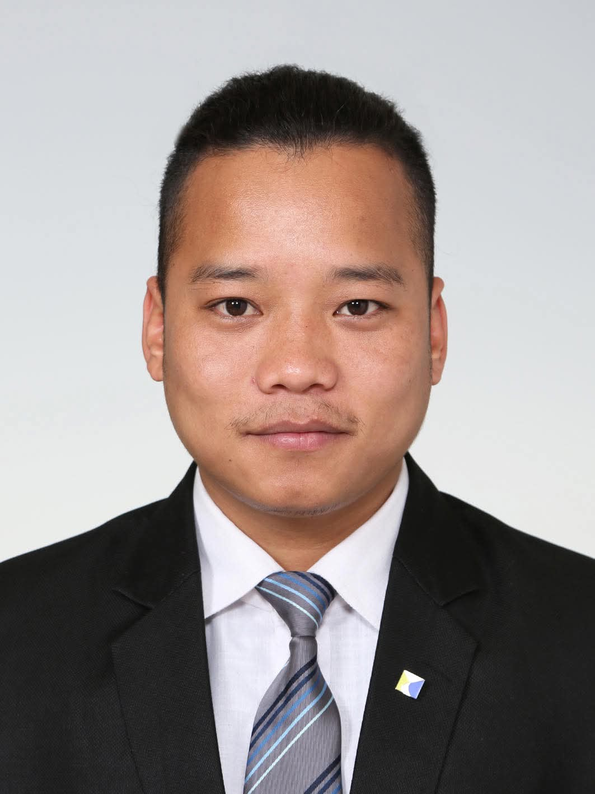

IT Student
こんにちは。私は岩谷学園よこはまITビジネス専門学校でITを学んでいるガルティマガルディパクです。Java、HTML、CSS、PHP、SQL、データベースなどの基礎知識を学びながら、Webアプリケーションやシステム開発に必要な知識と技術を身につけています。分からないことは自分で調べたり、先生に質問したりして理解を深め、課題には最後まで粘り強く取り組むことを大切にしています。私の強みは、新しい環境や仕事に早く慣れ、前向きな姿勢で学び続けられることです。将来は、多くの人や企業の役に立つシステムを開発できるエンジニアを目指しています。
HTMLとCSSを使用して設計・開発した個人ポートフォリオサイトです。自己紹介をはじめ、スキル、制作したプロジェクト、資格などを紹介しています。レスポンシブデザインに対応しており、シンプルで見やすく、使いやすいデザインを意識して制作しました。
使用技術: HTML, CSS
Javaの学習の一環として、Eclipseを使用して複数の簡単なゲームを作成しました。Quiz GameやNumber Guessing Gameなどを開発し、if文やfor文、while文、配列、Randomクラス、ユーザー入力処理などJavaの基本的な機能を実際に使いながら学びました。これらの制作を通して、プログラムの流れを理解し、問題解決力や論理的に考える力を身につけることができました。
制作内容：
使用技術：Java, Eclipse
Email: s2537050@yb.iwatani.ac.jp
Mobile no: 070-1890-4740